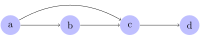
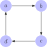

Course Notes for LIN 539
Fall 2022
Prerequisite
Relations are similar to functions in that they establish connections between objects. But whereas a function associates only one output with every input, a relation is more flexible and allows connections to arbitrarily many elements.
The question Is \(x\) a biological child of \(y\) is a function because it maps any two \(x\) and \(y\) to either true or false, but never both. But if we slightly change the question to just Name a biological child of \(y\), we are no longer dealing with a function because multiple answers are possible if \(y\) has more than one child. Instead, we can talk about the biological child relation \(R\) such that \(x\) is related to \(y\) via \(R\) iff \(x\) is a biological child of \(y\).
Given some relation \(R\), we write \(x \mathrel{R} y\) to indicate that \(R\) relates \(x\) to \(y\). Note that \(x \mathrel{R} y\) does not imply that \(y \mathrel{R} x\) also holds, nor that it doesn’t hold.
One relation you know very well is the “less than” relation \(<\) over numbers. When we write \(5 < 7\), we are saying that the relation \(<\) relates \(5\) to \(7\). However, it is not the case that \(7\) is related to \(5\) via \(<\), since \(7 < 5\) does not hold.
Suppose John has exactly two siblings, Mary and Sue. Then the sibling relation establishes two connections for John: John-Mary, and John-Sue. Using \(S\) for the sibling relation, we have \(\text{John} \mathrel{S} \text{Mary}\) and \(\text{John} \mathrel{S} \text{Sue}\).
In contrast to \(<\), the sibling relation is symmetric. That is to say, if Mary is a sibling of John, then John is also a sibling of Mary. Therefore we also have \(\text{Mary} \mathrel{S} \text{John}\) and \(\text{Sue} \mathrel{S} \text{John}\).
The relation is also transitive. If John is a sibling of Mary, and Sue is a sibling of John, then Sue is a sibling of Mary. So is also holds that \(\text{Mary} \mathrel{S} \text{Sue}\), and via symmetry we also get \(\text{Sue} \mathrel{S} \text{Mary}\).
Overall, we have \(x \mathrel{S} y\) where \(x, y \in \left \{ \text{John}, \text{Mary}, \text{Sue} \right \}\) and \(x \neq y\).
The substring relation \(\sqsubseteq\) holds between two strings \(u\) and \(v\) iff \(u\) is a substring of \(v\). That is to say, \(u \subseteq v\) iff there are \(w, w' \in \Sigma^*\) such that \(w \cdot u \cdot w' = v\). Note that for any given string \(u\), there are infinitely many \(v\) that \(u\) is a substring of. Even if the alphabet contains only \(a\), the string \(aa\) is a substring of \(aaa\), \(aaaa\), \(aaaaa\), and so on, ad infinitum. It is also a substring of itself (in this case, \(w = w' = \varepsilon\)).
Relations can be defined over more complex objects like sets. An example of this is the subset relation \(\subseteq\). The set \(\left \{ 1 \right \}\) is a subset of infinitely many other sets: \(\left \{ 0,1 \right \}\), \(\left \{ 1,2 \right \}\), \(\left \{ 0,1,2 \right \}\), \(\left \{ 1,3 \right \}\), and so on.
Just like a function can take multiple arguments to return a single output, a relation can connect multiple elements. In the real world, the “jointly conceived” relation \(J\) would connect two individuals to their offspring. So the expression \[\text{John}, \text{Mary} \mathrel{R} \text{Sue}\] encodes that John and Mary are the biological parents of Sue (let’s just hope that those are not the same people as in the first example).
Here is an example of a very abstract relation. Consider the space of all possible functions from real numbers to real numbers — that’s a lot of functions. Now let’s define a boundedness relation \(B\) which relates function \(f\) to function \(g\) iff \(f(x) \leq g(x)\) for every natural number \(x\). Suppose, for instance, that \(f(x) = x\) and \(g(x) = x^2\). Then \(f \mathrel{B} g\), but not \(g \mathrel{B} f\).
Many functions aren’t related via \(B\) at all. One example of this is \(f(x) = -x + 1\) and \(g(x) = x^2\). It is the case that \(f(x) \leq g(x)\) for all \(x \geq 1\), but \(f(0) = 1 > 0 = g(0)\).
We will mostly be dealing with the special case of binary relations where exactly one element is related to some other element.
Almost all relations above are binary relations. The only exception is the “jointly conceived” relation \(J\), which is a ternary relation as it relates three elements.
Given a binary relation \(R\), \(a \mathrel{R}\) is the set of objects that \(a\) is related to. Similarly, \(\mathrel{R} b\) is the set of objects that are related to \(b\). \[ a \mathrel{R} \mathrel{\mathop:}=\left \{ b \mid a \mathrel{R} b \right \} \] \[ \mathrel{R} b \mathrel{\mathop:}=\left \{ a \mid a \mathrel{R} b \right \} \]
Suppose that the parent-of relation \(P\) establishes the following relations between elements: \(\text{John} \mathrel{P} \text{Sue}\) and \(\text{Mary} \mathrel{P} \text{Sue}\). Then \(\text{John} \mathrel{P} = \left \{ \text{Sue} \right \}\) and \(\mathrel{P} \text{Sue} = \left \{ \text{John}, \text{Mary} \right \}\).
Let \(R\) be the relation that connects words to their parts of speech (N for nouns, V for verbs, A for adjectives, P for prepositions, D for determiners, and so on). List the following for English:
Every function can be regarded as a relation.
Consider the function \(f: \mathbb{N} \rightarrow \mathbb{N}\) with \(x \mapsto 2x\). It is identical to the relation \(R\) with \(x \mathrel{R} y\) iff \(y = 2x\).
The crucial difference between functions and relations is that functions are right-unique relations. That’s a fancy way of saying that a function cannot provide more than one output, whereas a relation can unless it is right-unique. When we view a function \(f\) as a relation \(R\), then it must hold for every \(a\) that \(a \mathrel{R}\) is either empty or contains exactly one element. Hence the term right-unique: if we look at the expression \(a \mathrel{R} b\), \(a\) is the left side and \(b\) the right side. If there cannot be more than one choice for \(b\), then the right side of \(a \mathrel{R} b\) is uniquely determined.
The bottom line: every function is a relation, but not every relation is a function. If \(a\) is related to two elements or more (i.e. \(\left | a \mathrel{R} \right | \geq 2\)), then \(R\) cannot be a function.
For each one of the following, say whether it is a function or just a relation.
Is the following statement true or false? Justify your answer.
Every relation \(R\) can be regarded as a function that maps \(x\) to \(x \mathrel{R}\).
A binary relation \(R\) can be combined with a set \(S\) to define an ordered set. Think of it as follows: whereas the elements of a normal set are just floating around in limbo with no ties between them, an ordered set uses some ordering relation \(R\) to lock its elements into place. This unit only covers the intuition behind orders, and the formal definitions are left to the next one.
The prototypical example of an order is the “equal or less than” relation \(\leq\) over the set \(\mathbb{N}\) of natural numbers. While the set of natural numbers is unordered, we can use \(\leq\) to define the usual order over it with \(0\) at the beginning, followed by \(1\), which is followed by \(2\), and so on.
We could have defined a very different kind of order over \(\mathbb{N}\). Let \(f\) be a function that maps each natural number \(x\) to the recursive sum of its digits. That is to say, \(f\) first sums up all the digits, then sums up the digits of the sum, and so on, until only a single digit remains. The computation for \(537\), for instance, would proceed as follows:
Consequently, \(f(537) = 6\). Note that \(f(537) = f(357) = f(753) = f(861) = f(96) = f(15) = f(6)\), so many different numbers have the same sum of digits. Now we define an order \(R\) such that \(x \mathrel{R} y\) iff \(f(x) < f(y)\). That’s a very different way of ordering the natural numbers, but it’s still an order.
The standard way of reciting the alphabet in English can be regarded as an order on the set \(\left \{ a,b,c,d,e,f,g,h,i,j,k,l,m,n,o,p,q,r,s,t,u,v,w,x,y,z \right \}\).
The essential aspect of orders is that they allow us to say that some element is in some sense less relevant or prominent than some other element. The \(\leq\) relation, for instance, orders numbers from small to big. We are effectively ranking the elements of the set.
Not every binary relation gives rise to such a ranking.
Suppose that we define the following binary relation \(R\) over the set \(\left \{ 1,2,3 \right \}\) of person features: \(1 \mathrel{R} 2\), \(1 \mathrel{R} 3\), \(2 \mathrel{R} 3\), and \(3 \mathrel{R} 2\). That’s not really a ranking. Yes, we can see that \(1\) is ranked higher than \(2\) and \(3\) (or lower, depending on how you look at it). But \(2\) and \(3\) are not clearly ranked with respect to each other. On the one hand \(2\) is higher than \(3\), and on the other hand \(3\) is higher than \(2\). We have a kind of cycle, and that’s not okay for orders.
Now consider the successor relation \(S\) over natural numbers. Here \(x \mathrel{S} y\) iff \(y = x + 1\). So we have \(0 \mathrel{S} 1\), \(1 \mathrel{S} 2\), \(2 \mathrel{S} 3\), and so on. Even though this might look like it generates the same order as \(<\), it’s not an order at all. The problem is that the relation does not relate elements that should be related if this were an actual ranking.
Just look at \(0 \mathrel{S} 1\) and \(1 \mathrel{S} 2\). This tells us that \(0\) is ranked higher than \(1\), and \(1\) is ranked higher than \(2\) (again, it doesn’t matter if we say “ranked higher” or “ranked lower”). But in a normal ranking, this would mean that \(0\) is also ranked higher than \(2\). Yet we do not have \(0 \mathrel{S} 2\). According to \(S\), \(0\) and \(2\) are completely unrelated, contradicting our intuitions about how a ranking ought to work. In a ranking, it is always the case that if \(x\) outranks something that outranks \(y\), then \(x\) outranks \(y\).
For this reason, an ordered set has to use a binary relation that is in some sense ranking-like. Among other things, this means that the relation can’t contain loops or cycles, and it must not have gaps that would be filled in if it were actually a ranking. If this seems awfully fuzzy to you, just focus on the intuition for now and check out the formal definitions in the next unit.
There are numerous types of orders, and the next unit covers them in detail. For now, it suffices to be aware of the major split between total orders and partial orders. Total orders are also called linear orders, which conveys the essential intuition behind them: a relation is a total order if it can be represented by writing all elements in a single line. A partial order is more flexible and allows some elements to be unordered with respect to each other, as long as this does not violate our requirement that the relation must be ranking-like.
Let’s consider once more the examples above. The relation \(\leq\) defines a total order over the set of natural numbers as there are no two elements that are unordered with respect to each other. No matter which two numbers \(x\) and \(y\) we look at, we either have \(x \leq y\) or \(y \leq x\). And if we have both \(x \leq y\) and \(y \leq x\), then \(x\) and \(y\) must be the same number. So we can’t have any odd situations like a loop from 10 back to 5. Hence we do indeed end up with a single line. And if we have a single line, we have a linear order, i.e a total order.
The relation \(R\), on the other hand, only defines a partial order. While we do still have a rough order between numbers based on their recursive digit sum, numbers with the same digit sum are unordered with respect to each other. This can be seen clearly in the corresponding figure. We are still dealing with some kind of ranking, though, as all elements in the \(n\)-th column of the figure are ranked higher than all the elements in the columns to their right. We still have a ranking of sorts, there’s just a lot elements that occupy the same rank.
There are numerous types of order relations. We will start out with strict orders as the definitions are slightly more intuitive in this case. After that, we will look at weak orders.
Strict orders can be partial or total. Their definitions are very succinct, but require specialized vocabulary.
A strict partial order is a binary relation \(R\) that is
A strict total order is a strict partial order that is semiconnex: for all \(x\) and \(y\), if \(x \neq y\) then it holds that \(x \mathrel{R} y\) or \(y \mathrel{R} x\).
These are very abstract definitions. In order to truly understand them, you have to develop an intuitive grasp of what each property means.
Suppose you have some set \(D\) of objects with a binary relation \(R\) defined over them. For example, we may have the set of natural numbers with the strictly less than relation \(<\), where we have \(3 < 5\) and \(4 < 5\), but not \(5 < 5\) (although \(5 \leq 5\)). We can think of these as structures where the set specifies the collection of building blocks and the relation connects these building blocks, putting them into a particular structural configuration. We can move through \(D\) along \(R\): if we are at \(x \in D\), we can move to any \(y\) such that \(x \mathrel{R} y\). And from \(y\), we can move on to any \(z\) such that \(y \mathrel{R} z\), and so on.
From the natural number \(5\), we can move to \(17\) via \(<\), and from there to \(329\).
This movement metaphor is very useful for understanding transitivity and other properties of relations. Some relations are such that whatever can be reached in two steps can also be reached in one step. So \(x \mathrel{R} y\) and \(y \mathrel{R} z\) entail that we also have \(x \mathrel{R} z\) — the ability to move from \(x\) to \(z\) via \(y\) implies that we can move directly from \(x\) to \(z\) without a stop at \(y\). Such relations are called transitive.
A binary relation \(R\) over \(D\) is transitive iff for all \(x,y,z \in D\) it holds that \(x \mathrel{R} y\) and \(y \mathrel{R} z\) jointly imply \(x \mathrel{R} z\). This must be the case even if \(x\), \(y\) and \(z\) are not distinct.
The human ancestor relation \(A\) is transitive. Your mother is one of your ancestors, and every ancestor of your mother is an ancestor of yourself. So \(x \mathrel{A} y\) and \(y \mathrel{A} z\) imply \(x \mathrel{A} z\).
What about the sibling relation \(S\)? Well, if John is a sibling of Mary and Mary is a sibling of Sue, then John is a sibling of Sue. So it looks like it is transitive. But it’s not! For a relation to be transitive, it is not enough that some cases obey transivitiy. All cases have to. So let’s look at this counterexample: John is a sibling of Mary, and Mary is a sibling of John, yet John is not his own sibling. In formal terms, we have \(\text{John} \mathrel{S} \text{Mary}\) and \(\text{Mary} \mathrel{S} \text{John}\), yet \(\text{John} \not\mathrel{S} \text{John}\).
Many other relations are not transitive, either. The human parent-of relation is not transitive, because there can be \(x\), \(y\), and \(z\) such that \(x\) is the parent of \(y\), \(y\) is the parent of \(z\), but \(x\) is not the parent of \(z\). In fact, that is how things are supposed to go in the real world and every deviation from this case is very problematic.
Sometimes a relation may partially meet the requirements of transitivity, but not for all elements of the domain. We have already seen this with the sibling relation, but let’s consider another case. You may love your parents, your parents love their parents, and you love your grandparents. So this is a case where we have \(x \mathrel{R} y\), \(y \mathrel{R} z\), and \(x \mathrel{R} z\). But obviously love is not a transitive relation — it is perfectly possible for a person you love to love somebody that you do not love at all. This shows that a relation is transitive only if there isn’t even a single counterexample to transitivity.
Intuitively, transitivity tells us that whatever can be reached in two steps can be reached in one step. But this actually implies that anything that can be reached in a finite number of steps can be reached in one step. This follows by iterated invocation of transitivity. Suppose that \(a \mathrel{R} b\), \(b \mathrel{R} c\), and \(c \mathrel{R} d\). This is shown pictorially below.

Then by transitivity, we also have \(a \mathrel{R} c\).

But then, again by transitivity, we must also have \(a \mathrel{R} d\) because of \(a \mathrel{R} c\) and \(c \mathrel{R} d\).

Since we can apply the same argument over and over again, anything that can be reached with a finite number of steps can also be reached in a single step.
It is also important to keep in mind that some relations can be trivially transitive, such as the relation below. Here there are no \(a\), \(b\), and \(c\) such that we have both \(a \mathrel{R} b\) and \(b \mathrel{R} c\), so transitivity holds because we cannot produce any counterexample to the claim that the relation is transitive.

Nor does transitivity imply that we can reach every element from every other element with a single step. Nodes may still be unreachable from certain positions. In the natural numbers, for example, \(<\) is transitive, yet it does not allow us to reach \(5\) from \(8\) (only the other way round).
Irreflexivity is much easier to understand than transitivity as it simply requires that no element be related to itself. In pictorial terms, an element is related to itself if there is a loop from the corresponding node back to itself. Only if there isn’t a single node with such a loop is the relation irreflexive.
Let \(R\) be a binary relation over \(D\). Then \(R\) is irreflexive iff there is no \(x \in D\) such that \(x \mathrel{R} x\).
The human parent-of relation is irreflexive because nobody can be their own parent. Similarly, \(<\) over natural numbers is irreflexive because no number can be strictly less than itself. However, \(\leq\) is not irreflexive because \(x \leq x\) for every number \(x\). Another relation that is not irreflexive is the relation induced by the identity function \(\mathrm{id}\), which maps every element to itself. This is shown below for the set \(\left \{ 1,2,3,4 \right \}\) with the identity relation:
Note that pictures can sometimes be misleading when it comes to irreflexivity. Consider the figure below.
It looks like this relation is irreflexive because no node has a loop back to itself. But it is common style for such figures to omit all connections that can be inferred via transitivity. So if this figure actually depicts a transitivity relation, then \(a \mathrel{R} b\) and \(b \mathrel{R} a\) implies \(a \mathrel{R} a\) because of transitivity. A clear violation of irreflexivity.
A relation is asymmetric iff two elements can only be related in one direction, not both.
Let \(R\) be a binary relation over \(D\). Then \(R\) is asymmetric iff it holds for all \(x\) and \(y\) in \(D\) that \(x \mathrel{R} y\) implies \(y \not\mathrel{R} x\).
The human parent-of relation is asymmetric. If John is a parent of Mary, then Mary cannot be a parent of John — assuming that there are no time travel shenanigans.
The brother-of relation is not asymmetric. Yes, John may be a brother of Mary yet Mary isn’t a brother of John, which satisfies the asymmetry requirement. But we have to look at all relevant cases. There is at least one John out there who is a brother of a male human, who in turn would be the brother of John. Asymmetry is violated.
As with irreflexivity, some transitive relations may not be asymmetric even though they look like it.

It looks like the figure above contains no two nodes \(x\) and \(y\) such that \(x \mathrel{R} y\) and \(y \mathrel{R} x\) both hold. But once again the figure might just omit the parts of the relation that can be inferred from transitivity. If so, then \(b \mathrel{R} c\), \(c \mathrel{R} d\), and \(d \mathrel{R} a\) jointly imply \(b \mathrel{R} a\). But we already have \(a \mathrel{R} b\), so asymmetry is violated.
A relation is semiconnex iff all elements of the set are related to each other. Pictorially, there has to be some line between any two given nodes ( the lines that can be inferred via transitivity).
A binary relation \(R\) over set \(D\) is semiconnex iff \(x \mathrel{R} y\) or \(y \mathrel{R} x\) holds for all \(x, y \in D\) such that \(x \neq y\).
This unit contains several relations that are semiconnex. They are repeated below (but for the sake of readability, all edges are omitted that can be inferred from transitivity).
However, one of the displayed relations is not semiconnex.
That’s because \(a_1\) and \(b_1\) are distinct, yet neither \(a_1 \mathrel{R} b_1\) nor \(b_1 \mathrel{R} a_1\) hold.
The previous unit also showed a relation that’s not semiconnex.
Here none of the elements in the same “column” are related to each other, violating semiconnexity.
Indicate in the table below which properties hold of the respective relations.
Remarks:
| Properties | substring | \(\subsetneq\) | \(\subseteq\) | lexicographic order | taller than |
|---|---|---|---|---|---|
| transitive | |||||
| irreflexive | |||||
| asymmetric | |||||
| semi-connex | |||||
| strict partial order | |||||
| strict total order |
Give a real-world example of a strict partial order that is not a strict total order.
Once you have a firm understanding of strict orders, weak orders are very simple: a weak order is a strict order that is reflexive instead of irreflexive. That is to say, every element is related to itself. In the figurative format we have used, this means that every node also has a loop back to itself (although this loop is usually not drawn if it’s already known that we’re dealing with a weak order). The typical example of a weak order is \(\leq\) over natural numbers, which only differs from \(<\) in that \(x \leq x\) while \(x \not< x\). This small difference to strict orders is pretty much all there is to weak orders, but this minor change requires a few changes in our definitions.
The definition of weak orders replaces the irreflexivity property of strict orders with a reflexivity requirement. Since reflexive relations cannot be asymmetric, asymmetry is weakened to antisymmetry.
A weak partial order is a binary relation \(R\) that is
Just like strict total orders are strict partial orders that are semi-connex, weak total orders are weak partial orders that are connex.
A weak total order is a weak partial order that is connex: for all \(x\) and \(y\), it holds that \(x \mathrel{R} y\) or \(y \mathrel{R} x\).
Reflexivity is a very simple property: a relation is reflexive iff every element is related to itself.
Let \(R\) be a binary relation over \(D\). Then \(R\) is reflexive iff it holds for all \(x \in D\) that \(x \mathrel{R} x\).
If there is at least one element that is not related to itself, the relation is not reflexive. However, that does not imply that the relation is irreflexive, as that is only the case if not a single element is related to itself. In cases where some but not all elements are related to themselves, the relation is non-reflexive.
The “same height” relation is reflexive as everything has the same height as itself. There simply cannot be any object \(x\) such that \(x\) does not have the same height as \(x\).
Suppose that John voted for Mary, and Mary voted for herself. We can represent this as a relation \(R\) such that \(\text{John} \mathrel{R} \text{Mary}\) and \(\text{Mary} \mathrel{R} \text{Mary}\). This relation is not reflexive because \(\text{John} \not\mathrel{R} \text{John}\). But it isn’t irreflexive either because \(\text{Mary} \mathrel{R} \text{Mary}\). Hence it is non-reflexive.
Here’s a surprising one: there is a relation that is both reflexive and irreflexive. It’s the empty relation \(R\), whose domain is the empty set \(\emptyset\). In this case, there is no \(x \in D\) such that \(x \mathrel{R} x\), which means that \(R\) is irreflexive. But there’s also no \(x \in D\) such that \(x \not\mathrel{R} x\), which is the same as saying that \(x \mathrel{R} x\) holds for every \(x \in D\) (there simply happen to be no \(x\) in \(D\)). Consequently, \(R\) is also reflexive.
There is no relation that is reflexive, and irreflexive, and non-reflexive. Explain why!
For each one of the following relations, say whether it is reflexive, irreflexive, or non-reflexive. Justify your answers! If you have to make additional assumptions, explain what they are.
Say whether the following claim is true or false, and justify your answer: If there are \(x\) and \(y\) in the domain \(D\) of \(R\) such that \(x \mathrel{R} y\), then it is impossible for \(R\) to be reflexive and asymmetric.
Reflexivity is the crucial difference between weak and strict orders. The former are reflexive, the latter irreflexive. All other differences are just a consequence of trying to accommodate this split between reflexivity and irreflexivity:
A relation is antisymmetric if it ensures as much asymmetry as possible without losing reflexivity.
Let \(R\) be a relation over \(D\). Then \(R\) is antisymmetric iff \(x \mathrel{R} y\) and \(y \mathrel{R} x\) jointly imply \(x = y\) for all \(x, y \in D\).
The familiar relation \(\leq\) over natural numbers is antisymmetric since \(x \leq y\) and \(y \leq x\) cannot both be true unless \(x = y\).
The sibling-of relation is not antisymmetric. That John is a sibling of Mary and Mary is a sibling of John does not entail that John and Mary are the same person.
Here’s a slightly confusing point. Since antisymmetry is a weakened version of asymmetry, every asymmetric relation is also antisymmetric.
The relation \(<\) is antisymmetric. The only way for antisymmetry to fail would be if there were \(x\) and \(y\) such that \(x \neq y\) yet \(x < y\) and \(y < x\). But clearly there can be no natural numbers such that \(x < y\) and \(y < x\). So antisymmetry is satisfied by virtue of \(<\) being asymmetric.
Show that every relation that is both irreflexive and antisymmetric is asymmetric.
Keep in mind that antisymmetry is not the opposite of asymmetry. That would be symmetry.
Let \(R\) be a binary relation over \(D\). Then \(R\) is symmetric iff it holds for all \(x\) and \(y\) in \(D\) that \(x \mathrel{R} y\) implies \(y \mathrel{R} x\).
Consider the “difference is 10” relation over integers, where \(x \mathrel{R} y\) iff \(|x - y| = 10\) (\(|n|\) is the value of \(n\), e.g. \(|5| = 5\) and \(|-5| = 5\)). This relation is symmetric. It is always the case that \(|x - y| = |y - x|\), for instance \(|15 - 5| = |5 - 15| = 10\). So if \(|x - y| = 10\), then \(|y - x| = 10\). Hence \(x \mathrel{R} y\) implies \(y \mathrel{R} x\), exactly as required by symmetry.
You might object that there are many choices for \(x\) and \(y\) whose difference isn’t \(10\), for example \(|5 - 2| = 3\). But that’s immaterial for symmetry. Symmetry has nothing to say about relations between arbitrary elements, it only tells us that if \(x\) is related to \(y\), then \(y\) is related to \(x\). If \(x\) isn’t related to \(y\) to begin with, then symmetry simply doesn’t care.
Say whether the following claim is true or false, and justify your answer: If there are \(x\) and \(y\) in the domain \(D\) of \(R\) such that \(x \mathrel{R} y\), then it is impossible for \(R\) to be transitive, symmetric, and irreflexive.
If a relation is neither symmetric, nor asymmetric, nor antisymmetric, then it is non-symmetric.
Consider the relation \(R\) such that \(x \mathrel{R} y\) iff \(x \leq y\) or \(|x| = |y|\). This relation is not symmetric. For instance, \(2 \leq 3\) entails that \(2 \mathrel{R} 3\) holds, yet we do not have \(3 \mathrel{R} 2\) because neither \(3 \leq 2\) nor \(|3| = |2|\) are true. It is not asymmetric because it is reflexive: \(x \mathrel{R} x\) always holds because \(x \leq x\). Yet it is not antisymmetric either. This is witnessed by \(-2 \mathrel{R} 2\) and \(2 \mathrel{R} -2\) (because \(|-2| = |2|\)) even though \(-2 \neq 2\). With all symmetry options exhausted, this only leaves us to conclude that \(R\) is non-symmetric.
The empty relation is symmetric, asymmetric, and antisymmetric. That’s because its domain is the empty set. If there are no \(x\) and \(y\) such that \(x \mathrel{R} y\), then it is impossible to violate symmetry, asymmetry, or antisymmetry. Hence, all three variations of symmetry hold simultaneously. However, this also means that the empty relation is not non-symmetric.
For each one of the following relations, say whether it is symmetric, asymmetric, antisymmetric, or non-symmetric. Be as specific as possible: don’t just say “antisymmetric” if the relation is also asymmetric, in that case you should answer “asymmetric”. Take care to justify your answers, and if you have to make additional assumptions, explain what they are.
A relation is connex iff it is reflexive and semi-connex. Remember that a relation is semi-connex iff \(x \mathrel{R} y\) or \(y \mathrel{R} x\) hold if \(x\) and \(y\) are distinct elements. But if a relation is reflexive, then \(x \mathrel{R} y\) is necessarily the case whenever \(x = y\). So we can just drop the requirement that \(x\) and \(y\) are distinct and stipulate that \(x \mathrel{R} y\) or \(y \mathrel{R} x\) holds no matter whether \(x = y\) or \(x \neq y\).
A relation \(R\) over set \(D\) is connex iff \(x \mathrel{R} y\) or \(y \mathrel{R} x\) holds for all \(x, y \in D\).
Indicate in the table below which properties hold of the relations.
| Relation | transitive | reflexive | anti-symmetric | connex |
|---|---|---|---|---|
| substring | ||||
| \(\subsetneq\) | ||||
| \(\subseteq\) | ||||
| alphabetical order | ||||
| taller than |
With all those different notions of reflexivity, symmetry, and connexity, it is easy to get confused about the various types of orders. But they are all very similar, in fact. The key difference between weak and strict orders is whether the relation is reflexive or irreflexive. The key difference between partial and total orders is whether semi-connexity holds.
Here is a tabular overview based on the definitions in this and the preceding unit. The use of ~ indicates that the property may or may not be satisfied
| Property | Weak partial | Strict partial | Weak total | Strict total |
|---|---|---|---|---|
| transitive | Y | Y | Y | Y |
| reflexive | Y | N | Y | N |
| irreflexive | N | Y | N | Y |
| asymmetric | N | Y | N | Y |
| antisymmetric | Y | Y | Y | Y |
| semi-connex | ~ | ~ | Y | Y |
| connex | ~ | ~ | Y | N |
For the sake of completeness, let’s include all the other properties of relations we discussed in this unit.
| Property | Weak partial | Strict partial | Weak total | Strict total |
|---|---|---|---|---|
| transitive | Y | Y | Y | Y |
| reflexive | Y | N | Y | N |
| irreflexive | N | Y | N | Y |
| non-reflexive | N | N | N | N |
| symmetric | N | N | N | N |
| asymmetric | N | Y | N | Y |
| antisymmetric | Y | Y | Y | Y |
| non- symmetric | N | N | N | N |
| semi-connex | ~ | ~ | Y | Y |
| connex | ~ | ~ | Y | N |
Some of these properties, like symmetry, aren’t useful for separating the four types of orders, but will allow us later on to distinguish them from equivalence relations or preorders.
Still, the tables above can be simplified quite a bit:
Remember that every asymmetric relation is also antisymmetric. And every irreflexive, antisymmetric relation is asymmetric. For the purposes of distinguishing weak and strict partial orders, we don’t really need to list asymmetry. It’s enough to know that both are antisymmetric relations that are either reflexive or irreflexive.
Similarly, every connex relation is semiconnex. And if a relation is reflexive and semi-connex, then it is connex. So we don’t need to list connexity either. All we need to say is that partial orders are reflexive and semi-connex whereas strict orders are irreflexive and semi-connex.
Hence, we can make do with a much shorter table.
| Property | Weak partial | Strict partial | Weak total | Strict total |
|---|---|---|---|---|
| transitive | Y | Y | Y | Y |
| antisymmetric | Y | Y | Y | Y |
| reflexive | Y | N | Y | N |
| irreflexive | N | Y | N | Y |
| semi-connex | ~ | ~ | Y | Y |
All four types of orders now share the common core of being transitive and antisymmetric (which separates them from other order relations). Reflexivity determines if the order is weak or strict. Semi-connexity determines if the order is partial or total.
A binary relation \(R\) over domain \(D\) is
Indicate for each relation in the table below what kind of order it represents. Some relations fit multiple types, and some none.
| Relation | weak partial | strict partial | weak total | weak strict |
|---|---|---|---|---|
| substring | ||||
| \(\subsetneq\) | ||||
| alphabetical order | ||||
| ordering all humans by height | ||||
| “sums to 10” relation | ||||
| parent-of relation | ||||
| “voted for same candidate” |
Give a real-world example of a weak partial order that is not a total order.
Let \(D\) be some fixed domain over which we define a relation \(R \subseteq D \times D\). The \(P\)-closure of \(R\) is the smallest \(R'\) such that \(R \subseteq R' \subseteq D \times D\) and \(R\) has property \(P\). For example, the reflexive, symmetric, transitive closure of \(R\) is the smallest superset \(R'\) that is reflexive, symmetric, and transitive.
Consider the relation \(R \mathrel{\mathop:}=\left \{ \left \langle 1,2 \right \rangle, \left \langle 2,3 \right \rangle, \left \langle 3,4 \right \rangle \right \}\). We want to compute its transitive closure. We first add \(\left \langle 1,3 \right \rangle\) and \(\left \langle 2,4 \right \rangle\), which we can construct from the existing pairs via transitivity. But the result is still not transitive The relation now contains both \(\left \langle 1,3 \right \rangle\) and \(\left \langle 3,4 \right \rangle\), so we also have to add \(\left \langle 1,4 \right \rangle\). At this point, the relation is transitive, so we do not add any more edges.
Consider the relation \(R \mathrel{\mathop:}=\left \{ \left \langle 1,2 \right \rangle, \left \langle 3,2 \right \rangle \right \}\). Its transitive closure is just \(R\).
Consider once more the relation \(R \mathrel{\mathop:}=\left \{ \left \langle 1,2 \right \rangle, \left \langle 3,2 \right \rangle \right \}\). Now we want to compute its symmetric, transitive closure. As \(R\) is not symmetric, we have to add additional pairs, in this case \(\left \langle 2,1 \right \rangle\) and \(\left \langle 2,3 \right \rangle\). But \(R' \mathrel{\mathop:}=\left \{ \left \langle 1,2 \right \rangle, \left \langle 2,1 \right \rangle, \left \langle 2,3 \right \rangle, \left \langle 3,2 \right \rangle \right \}\) is not transitive. In order to make \(R'\) transitive, we have to add \(\left \langle 1,3 \right \rangle\) and \(\left \langle 3,1 \right \rangle\), but also \(\left \langle 1,1 \right \rangle\), \(\left \langle 2,2 \right \rangle\), and \(\left \langle 3,3 \right \rangle\). The resulting \(R'' \mathrel{\mathop:}=\left \{ 1,2,3 \right \} \times \left \{ 1,2,3 \right \}\) is transitive and symmetric, and even reflexive.
Calculate all of the following, assuming that the relation’s domain is \(D \mathrel{\mathop:}=\left \{ a,b,c,d \right \}\):
Weak partial orders and total orders are just two particular types of relations. There are several others.
The most basic order relation is the preorder, which is like a weak partial order but lacks antisymmetry. So it is transitive and reflexive, but not necessarily anything beyond that.
A relation \(R \subseteq D \times D\) is a preorder iff it is reflexive and transitive.
If one takes a preorder and adds antisymmetry, one gets a weak partial order. If one adds symmetry instead, one gets an equivalence relation.

A relation \(R \subseteq D \times D\) is an equivalence relation iff it is reflexive, symmetric, and transitive.
Intuitively, an equivalence relation does exactly what its name implies: it relates elements that are equivalent with respect to some property that the relation is sensitive to.
One equivalence relation that everybody is familiar with is the equality \(=\) of numbers. But it isn’t a particularly insightful relation. It is reflexive as \(n = n\) for every number \(n\). It also satisfies symmetry and transitivity, but that’s because \(x = y\) iff \(x\) and \(y\) are the same number. So symmetry holds because \(x = y\) obviously implies \(y = x\) if \(x\) and \(y\) are the same number. For the same reason, transitivity must hold, too: \(x = y\) and \(y = z\) can be the case only if \(x\), \(y\), and \(z\) are all the same number, in which case \(x = z\) is of course true.
A more interesting example is equivalence modulo \(2\). The modulo \(n\) operation divdies a number by \(n\) and returns the remainder. For example, \(5 \mod 2 = 1\), whereas \(6 \mod 2 = 0\).
Suppose \(x \equiv_2 y\) iff \(x \mod 2 = y \mod 2\). Then \(\equiv_2\) is an equivalence relation. First, it is clearly refleixve: \(x \equiv_2 x\) iff \(x \mod 2 = x \mod 2\), which always holds. Next, symmetry is also satisfied: \(x \equiv_2 y\) iff \(x \mod 2 = y \mod 2\) iff \(y \mod 2 = x \mod 2\) iff \(y \equiv_2 x\).
Explain why \(\equiv_2\) is transitive.
Let us define a person’s family pain as the number of family members that they’d rather not be related to. Given some domain \(D\) of individuals, let \(R \mathrel{\mathop:}=\left \{ \left \langle d,e \right \rangle \mid d \text{ and } e \text{ suffer the same familiy pain} \right \}\). Show that \(R\) is an equivalence relation.
The equivalence kernel of a function \(f\) is an equivalence relation \(\sim_f\) such that two elements are equivalent iff they are mapped to the same value by \(f\). Formally, \(x \sim_f y\) iff \(f(x) = f(y)\). Explain why \(\equiv_f\) is an equivalence relation no matter what function \(f\) is.
Suppose that two cities are continent mates iff they are connected by roads. The continent mate relation contains all \(\left \langle c,m \right \rangle\) (and only those) such that \(c\) and \(m\) are continent mates. Is the continent mate relation an equivalence relation? Why (not)?
Is the empty relation (i.e. \(\emptyset\)) an equivalence relation? Justify your answer.
Given an equivalence relation \(R \subseteq D \times D\) and element \(x\), \([x]\) is the equivalence class of \(x\). It contains all elements that are equivalent to \(x\) according to \(R\). Formaly, \([x] \mathrel{\mathop:}=\left \{ y \mid x R y \right \}\). Keep in mind that \(R\) is reflexive, so \(x \in [x]\).
Also, symmetry and transitivity entail that \(x \in [y]\) iff \(y \in [x]\). So it follows from \(x \in [y]\) that \([x] = [y]\). Hence it doesn’t matter which member of an equivalence class one uses in its name, there is no difference between \([x]\) and \([y]\) if \(x\) and \(y\) belong go the same equivalence class.
Consider again the modulo 2 relation \(\equiv_2\). It gives rise to two equivalence classes. The first ist \([0] \mathrel{\mathop:}=\left \{ 0, 2, 4, 6, \ldots \right \}\), which contains all even numbers, and the other is \([1] \mathrel{\mathop:}=\left \{ 1, 3, 5, 7, \ldots \right \}\), the set of odd numbers. We could also refer to them as \([2]\) and \([3]\), respectively, or \([10]\) and \([7]\), it really does not matter.
Intuitively, what equivalence classes does the continent mate relation yield?
Note that equivalence classes never overlap, they are disjoint sets. Given a set \(S\) and an equivalence relation \(R\), no member of \(S\) can belong to more than one equivalence class.
Suppose that \(x \in [y]\) and \(x \in [z]\), but \([y] \neq [z]\). Why is this impossible?
In addition, an equivalence relation over a set \(S\) is usually chosen in such a way that every element of \(S\) belongs to an equivalence class.
In principle, one could combine the set \(\left \{ a,b,c \right \}\) with the equivalence relation \(R \mathrel{\mathop:}=\left \{ \left \langle a,a \right \rangle, \left \langle a,b \right \rangle, \left \langle b,a \right \rangle, \left \langle b,b \right \rangle \right \}\). But it is more natural to extend the relation to \(R' \mathrel{\mathop:}=\left \{ \left \langle a,a \right \rangle, \left \langle a,b \right \rangle, \left \langle b,a \right \rangle, \left \langle b,b \right \rangle, \left \langle c,c \right \rangle \right \}\). Intuitively, \(R'\) is exactly like \(R\) except that there is also an equivalence class for elements that \(R\) is not defined for.
Given these assumptions, every member of \(S\) belongs to exactly one equivalence class. The equivalence classes thus add an additional layer of structure to \(S\). They break it down into a collection of non-overlapping, non-empty subsets (the equivalence classes) that fully cover \(S\). This is also called a partition of \(S\), and one says that \(R\) partitions \(S\). Each equivalence class is also called a cell of the partition.
Given an equivalence relation \(\sim\), \(S/\sim \mathrel{\mathop:}=\left \{ [x] \mid x \in S \right \}\) is the partition \(\sim\) induces on \(S\). This is also called a quotient set (yes, there’s many different names for the same thing here). Sometimes, \(S\) may have some additional operation or relation defined on it. It may be possible to lift this operation or relation from \(S\) to its quotient set \(S/\sim\). In this case, one obtains a quotient structure.
Consider once more the equivalence relation \(\equiv_2\). Over the natural numbers, it induces a quotient set consisting of \([0]\) and \([1]\), the even and odd numbers, respectively. Now suppose that we add addition as an operation to the natural numbers. Then it holds that \((m + n) \mod 2 = ([m] + [n]) \mod 2\). In other words, there are two different ways of computing the desired result. The first option operates on \(S\). One adds the two numbers and then takes the sum modulo 2. Alternatively, one can look at the quotient set. Take the two equivalence classes, and take their sum by picking the smallest number from each equivalence class and adding them together. Then apply modulo 2 as before.
Here’s what this looks like with specific numbers. Suppose you want to calculate \((10,222 + 13,728,529) \mod 2\). You could add this up to \(13,738,751\), divide by two, and get a remainder of \(1\). But you probably realized right away that the first number is even and the second one odd, so their sum will be odd, which means that division by 2 will leave a remainder of \(1\). In other words, you have computed the result with the quotient structure. First you noted that \(10,222 \in [0]\) and \(13,728,529 \in [1]\). As \([0] + [1] = 0 + 1 = 1\), you immediately get a remainder of \(1\).
Quotient structures are a very powerful concept, in particular when it comes to designing efficient algorithms. A set may contain millions of elements, and the operations on the set may take a long time to compute on some of those elements. But you might be able to build a much smaller quotient structure, and the operations may be faster over equivalence classes because you can pick very simple representatives of each class. After all, \((3 + 5) \mod 7\) is a much easier way to calculate the output of \((7,003 + 14,726) \mod 7\).